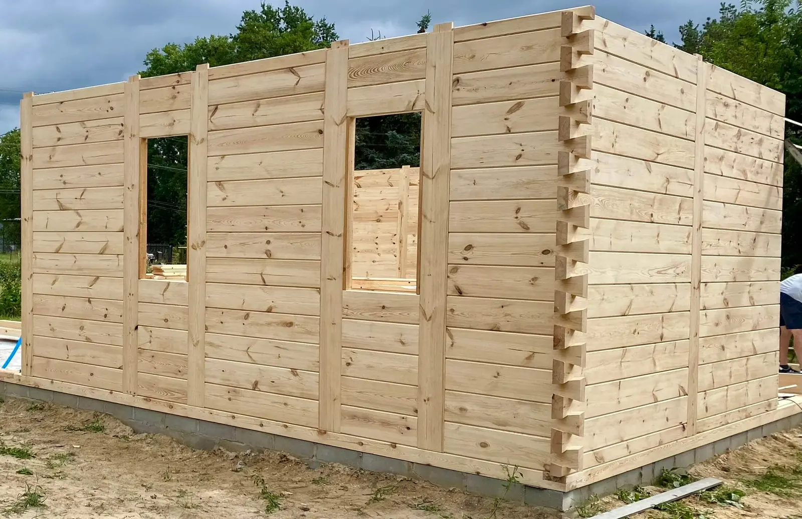

Strona główna / Technologia
Technologia budowy domów z bali
Budujemy zgodnie ze starą ciesielską sztuką, a tam, gdzie to pomaga, z własnymi wynalazkami.

Szczelny i solidny bez gwoździ
Każdy dom powstaje pod okiem Stanisława Biernackiego, mistrza ciesielstwa. Metoda sumikowo-łątkowa (pionowe łątki, poziome sumiki) daje sztywną i bardzo szczelną konstrukcję. Głębokie zamki ciesielskie wycinamy w drewnie, dlatego nie potrzeba gwoździ ani wypełniaczy szczelin.
Do łączenia używamy wyłącznie drewnianych czopów i kołków, tzw. tebli. Sumiki łączymy na obce pióro, co daje precyzyjne dopasowanie i równo rozkłada obciążenie. Węgły łączymy na jaskółczy ogon.
Patent P.397523
Przystawkę roboczą frezarki do mechanicznego zacinania węgłów na jaskółczy ogon Stanisław Biernacki wynalazł i opatentował sam. Dzięki niej węgły są dokładniejsze, a budowa idzie szybciej.
Niezależna konstrukcja wewnętrzna
Strop spoczywa na wewnętrznej konstrukcji ciesielskiej, a nie bezpośrednio na ścianach zewnętrznych. Ta konstrukcja jest też szkieletem ścian wewnętrznych, więc wnętrze można wykańczać zaraz po zestawieniu domu, bez obaw o pękanie ścian, gdy budynek pracuje.

Przekrój ściany i wykończenia
Technologię łączeń i montażu dobieramy do projektu domu. Ścianę można wykończyć na kilka sposobów:
- Podwójny bal
- Wykończenie deską ubijaną poziomo
- Wykończenie deską ubijaną pionowo
- Ocieplenie wełną mineralną
- Konstrukcja szkieletowa wewnątrz
Drewno
Domy budujemy z drewna sosnowego, świerkowego lub modrzewiowego z polskich lasów, ściętego zimą. Drewno jest suszone komorowo w przemysłowych suszarniach i impregnowane po obróbce, przed montażem. Dzięki temu jest odporne na wilgoć i nie przyciąga szkodników.
Na konstrukcję domu dajemy 15 lat gwarancji.